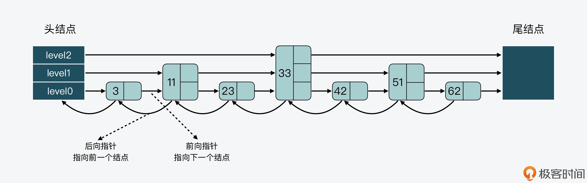
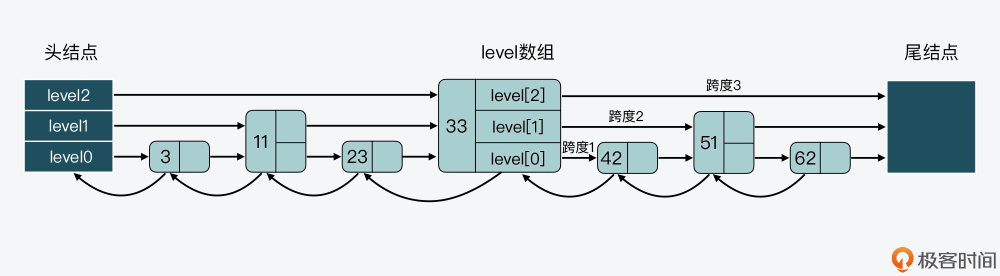
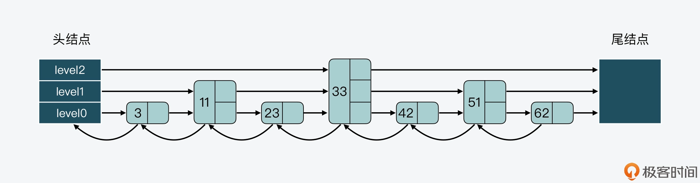
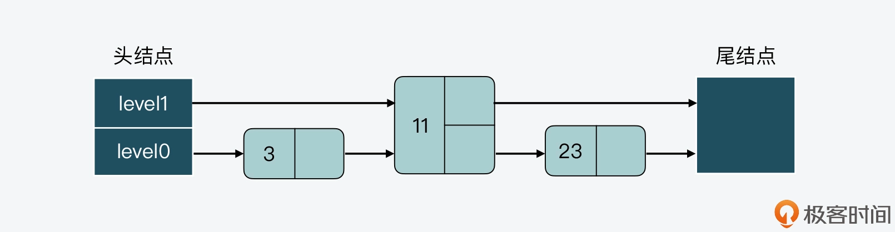
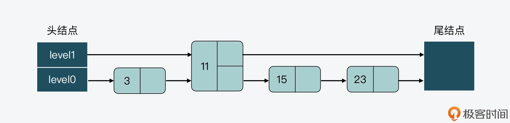
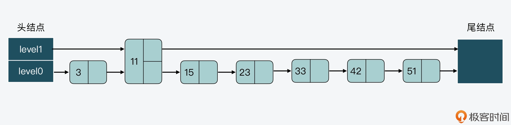
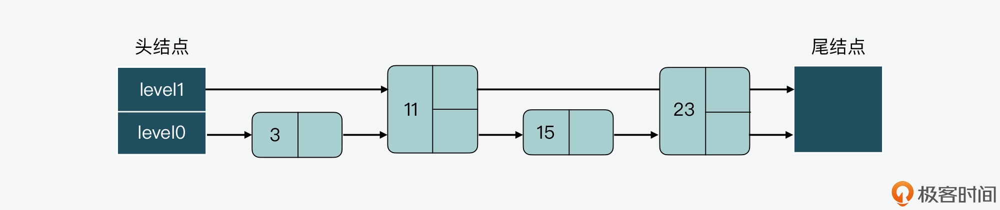
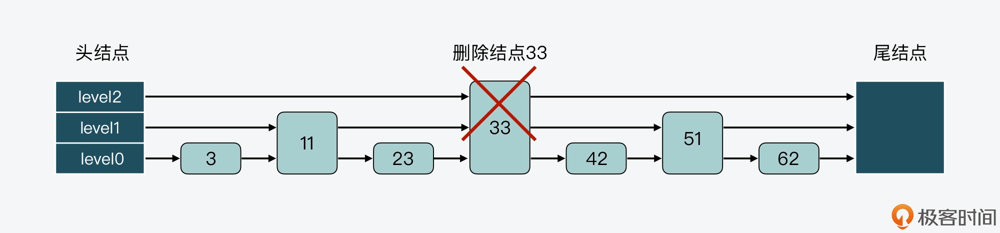
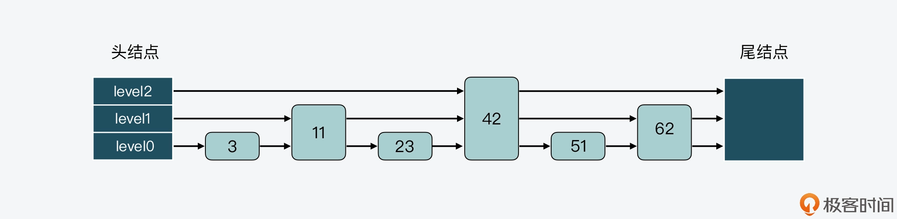

- 00 开篇词 阅读Redis源码能给你带来什么？.md.html
- 01 带你快速攻略Redis源码的整体架构.md.html
- 02 键值对中字符串的实现，用char还是结构体？.md.html
- 03 如何实现一个性能优异的Hash表？.md.html
- 04 内存友好的数据结构该如何细化设计？.md.html
- 05 有序集合为何能同时支持点查询和范围查询？.md.html
- 06 从ziplist到quicklist，再到listpack的启发.md.html
- 07 为什么Stream使用了Radix Tree？.md.html
- 08 Redis server启动后会做哪些操作？.md.html
- 09 Redis事件驱动框架（上）：何时使用select、poll、epoll？.md.html
- 10 Redis事件驱动框架（中）：Redis实现了Reactor模型吗？.md.html
- 11 Redis事件驱动框架（下）：Redis有哪些事件？.md.html
- 12 Redis真的是单线程吗？.md.html
- 13 Redis 6.0多IO线程的效率提高了吗？.md.html
- 14 从代码实现看分布式锁的原子性保证.md.html
- 15 为什么LRU算法原理和代码实现不一样？.md.html
- 16 LFU算法和其他算法相比有优势吗？.md.html
- 17 Lazy Free会影响缓存替换吗？.md.html
- 18 如何生成和解读RDB文件？.md.html
- 19 AOF重写（上）：触发时机与重写的影响.md.html
- 20 AOF重写（下）：重写时的新写操作记录在哪里？.md.html
- 21 主从复制：基于状态机的设计与实现.md.html
- 22 哨兵也和Redis实例一样初始化吗？.md.html
- 23 从哨兵Leader选举学习Raft协议实现（上）.md.html
- 24 从哨兵Leader选举学习Raft协议实现（下）.md.html
- 25 PubSub在主从故障切换时是如何发挥作用的？.md.html
- 26 从Ping-Pong消息学习Gossip协议的实现.md.html
- 27 从MOVED、ASK看集群节点如何处理命令？.md.html
- 28 Redis Cluster数据迁移会阻塞吗？.md.html
- 29 如何正确实现循环缓冲区？.md.html
- 30 如何在系统中实现延迟监控？.md.html
- 31 从Module的实现学习动态扩展功能.md.html
- 32 如何在一个系统中实现单元测试？.md.html
- 结束语 Redis源码阅读，让我们从新开始.md.html
- 捐赠
05 有序集合为何能同时支持点查询和范围查询？
有序集合（Sorted Set）是 Redis 中一种重要的数据类型，它本身是集合类型，同时也可以支持集合中的元素带有权重，并按权重排序。
而曾经就有一位从事 Redis 开发的同学问我：为什么 Sorted Set 能同时提供以下两种操作接口，以及它们的复杂度分别是 O(logN)+M 和 O(1) 呢？
- ZRANGEBYSCORE：按照元素权重返回一个范围内的元素。
- ZSCORE：返回某个元素的权重值。
实际上，这个问题背后的本质是：为什么 Sorted Set 既能支持高效的范围查询，同时还能以 O(1) 复杂度获取元素权重值？
这其实就和 Sorted Set 底层的设计实现有关了。Sorted Set 能支持范围查询，这是因为它的核心数据结构设计采用了跳表，而它又能以常数复杂度获取元素权重，这是因为它同时采用了哈希表进行索引。
那么，你是不是很好奇，Sorted Set 是如何把这两种数据结构结合在一起的？它们又是如何进行协作的呢？今天这节课，我就来给你介绍下 Sorted Set 采用的双索引的设计思想和实现。理解和掌握这种双索引的设计思想，对于我们实现数据库系统是具有非常重要的参考价值的。
好，接下来，我们就先来看看 Sorted Set 的基本结构。
Sorted Set 基本结构
要想了解 Sorted Set 的结构，就需要阅读它的代码文件。这里你需要注意的是，在 Redis 源码中，Sorted Set 的代码文件和其他数据类型不太一样，它并不像哈希表的 dict.c/dict.h，或是压缩列表的 ziplist.c/ziplist.h，具有专门的数据结构实现和定义文件。
Sorted Set 的实现代码在t_zset.c文件中，包括 Sorted Set 的各种操作实现，同时 Sorted Set 相关的结构定义在server.h文件中。如果你想要了解学习 Sorted Set 的模块和操作，注意要从 t_zset.c 和 server.h 这两个文件中查找。
好，在知道了 Sorted Set 所在的代码文件之后，我们可以先来看下它的结构定义。Sorted Set 结构体的名称为 zset，其中包含了两个成员，分别是哈希表 dict 和跳表 zsl，如下所示。
typedef struct zset {
dict *dict;
zskiplist *zsl;
} zset;
在这节课一开始，我就说过 Sorted Set 这种同时采用跳表和哈希表两个索引结构的设计思想，是非常值得学习的。因为这种设计思想充分利用了跳表高效支持范围查询（如 ZRANGEBYSCORE 操作），以及哈希表高效支持单点查询（如 ZSCORE 操作）的特征。这样一来，我们就可以在一个数据结构中，同时高效支持范围查询和单点查询，这是单一索引结构比较难达到的效果。
不过，既然 Sorted Set 采用了跳表和哈希表两种索引结构来组织数据，我们在实现 Sorted Set 时就会面临以下两个问题：
- 跳表或是哈希表中，各自保存了什么样的数据？
- 跳表和哈希表保存的数据是如何保持一致的？
因为我已经在【第 3 讲】中给你介绍了 Redis 中哈希表的实现思路，所以接下来，我主要是给你介绍下跳表的设计和实现。通过学习跳表，你可以了解到跳表中保存的数据，以及跳表的常见操作。然后，我再带你来探究下 Sorted Set 如何将哈希表和跳表组合起来使用的，以及这两个索引结构中的数据是如何保持一致的。
跳表的设计与实现
首先，我们来了解下什么是跳表（skiplist）。
跳表其实是一种多层的有序链表。在课程中，为了便于说明，我把跳表中的层次从低到高排个序，最底下一层称为 level0，依次往上是 level1、level2 等。
下图展示的是一个 3 层的跳表。其中，头结点中包含了三个指针，分别作为 leve0 到 level2 上的头指针。

可以看到，在 level 0 上一共有 7 个结点，分别是 3、11、23、33、42、51、62，这些结点会通过指针连接起来，同时头结点中的 level0 指针会指向结点 3。然后，在这 7 个结点中，结点 11、33 和 51 又都包含了一个指针，同样也依次连接起来，且头结点的 level 1 指针会指向结点 11。这样一来，这 3 个结点就组成了 level 1 上的所有结点。
最后，结点 33 中还包含了一个指针，这个指针会指向尾结点，同时，头结点的 level 2 指针会指向结点 33，这就形成了 level 2，只不过 level 2 上只有 1 个结点 33。
好，在对跳表有了直观印象后，我们再来看看跳表实现的具体数据结构。
跳表数据结构
我们先来看下跳表结点的结构定义，如下所示。
typedef struct zskiplistNode {
//Sorted Set中的元素
sds ele;
//元素权重值
double score;
//后向指针
struct zskiplistNode *backward;
//节点的level数组，保存每层上的前向指针和跨度
struct zskiplistLevel {
struct zskiplistNode *forward;
unsigned long span;
} level[];
} zskiplistNode;
首先，因为 Sorted Set 中既要保存元素，也要保存元素的权重，所以对应到跳表结点的结构定义中，就对应了 sds 类型的变量 ele，以及 double 类型的变量 score。此外，为了便于从跳表的尾结点进行倒序查找，每个跳表结点中还保存了一个后向指针（*backward），指向该结点的前一个结点。
然后，因为跳表是一个多层的有序链表，每一层也是由多个结点通过指针连接起来的。因此在跳表结点的结构定义中，还包含了一个 zskiplistLevel 结构体类型的 level 数组。
level 数组中的每一个元素对应了一个 zskiplistLevel 结构体，也对应了跳表的一层。而 zskiplistLevel 结构体定义了一个指向下一结点的前向指针（*forward），这就使得结点可以在某一层上和后续结点连接起来。同时，zskiplistLevel 结构体中还定义了，这是用来记录结点在某一层上的*跨度forward指针和该指针指向的结点之间，跨越了 level0 上的几个结点。
我们来看下面这张图，其中就展示了 33 结点的 level 数组和跨度情况。可以看到，33 结点的 level 数组有三个元素，分别对应了三层 level 上的指针。此外，在 level 数组中，level 2、level1 和 level 0 的跨度 span 值依次是 3、2、1。

最后，因为跳表中的结点都是按序排列的，所以，对于跳表中的某个结点，我们可以把从头结点到该结点的查询路径上，各个结点在所查询层次上的*forward指针跨度，做一个累加。这个累加值就可以用来计算该结点在整个跳表中的顺序，另外这个结构特点还可以用来实现 Sorted Set 的 rank 操作，比如 ZRANK、ZREVRANK 等。
好，了解了跳表结点的定义后，我们可以来看看跳表的定义。在跳表的结构中，定义了跳表的头结点和尾结点、跳表的长度，以及跳表的最大层数，如下所示。
typedef struct zskiplist {
struct zskiplistNode *header, *tail;
unsigned long length;
int level;
} zskiplist;
因为跳表的每个结点都是通过指针连接起来的，所以我们在使用跳表时，只需要从跳表结构体中获得头结点或尾结点，就可以通过结点指针访问到跳表中的各个结点。
那么，当我们在 Sorted Set 中查找元素时，就对应到了 Redis 在跳表中查找结点，而此时，查询代码是否需要像查询常规链表那样，逐一顺序查询比较链表中的每个结点呢？
其实是不用的，因为这里的查询代码，可以使用跳表结点中的 level 数组来加速查询。
跳表结点查询
事实上，当查询一个结点时，跳表会先从头结点的最高层开始，查找下一个结点。而由于跳表结点同时保存了元素和权重，所以跳表在比较结点时，相应地有两个判断条件：
- 当查找到的结点保存的元素权重，比要查找的权重小时，跳表就会继续访问该层上的下一个结点。
- 当查找到的结点保存的元素权重，等于要查找的权重时，跳表会再检查该结点保存的 SDS 类型数据，是否比要查找的 SDS 数据小。如果结点数据小于要查找的数据时，跳表仍然会继续访问该层上的下一个结点。
但是，当上述两个条件都不满足时，跳表就会用到当前查找到的结点的 level 数组了。跳表会使用当前结点 level 数组里的下一层指针，然后沿着下一层指针继续查找，这就相当于跳到了下一层接着查找。
这部分的代码逻辑如下所示，因为在跳表中进行查找、插入、更新或删除操作时，都需要用到查询的功能，你可以重点了解下。
//获取跳表的表头
x = zsl->header;
//从最大层数开始逐一遍历
for (i = zsl->level-1; i >= 0; i--) {
...
while (x->level[i].forward && (x->level[i].forward->score < score || (x->level[i].forward->score == score
&& sdscmp(x->level[i].forward->ele,ele) < 0))) {
...
x = x->level[i].forward;
}
...
}
跳表结点层数设置
这样一来，有了 level 数组之后，一个跳表结点就可以在多层上被访问到了。而一个结点的 level 数组的层数也就决定了，该结点可以在几层上被访问到。
所以，当我们要决定结点层数时，实际上是要决定 level 数组具体有几层。
一种设计方法是，让每一层上的结点数约是下一层上结点数的一半，就像下面这张图展示的。第 0 层上的结点数是 7，第 1 层上的结点数是 3，约是第 0 层上结点数的一半。而第 2 层上的结点就 33 一个，约是第 1 层结点数的一半。

这种设计方法带来的好处是，当跳表从最高层开始进行查找时，由于每一层结点数都约是下一层结点数的一半，这种查找过程就类似于二分查找，查找复杂度可以降低到 O(logN)。
但这种设计方法也会带来负面影响，那就是为了维持相邻两层上结点数的比例为 2:1，一旦有新的结点插入或是有结点被删除，那么插入或删除处的结点，及其后续结点的层数都需要进行调整，而这样就带来了额外的开销。
我先来给你举个例子，看下不维持结点数比例的影响，这样虽然可以不调整层数，但是会增加查询复杂度。
首先，假设当前跳表有 3 个结点，其数值分别是 3、11、23，如下图所示。

接着，假设现在要插入一个结点 15，如果我们不调整其他结点的层数，而是直接插入结点 15 的话，那么插入后，跳表 level 0 和 level 1 两层上的结点数比例就变成了为 4:1，如下图所示。

而假设我们持续插入多个结点，但是仍然不调整其他结点的层数，这样一来，level0 上的结点数就会越来越多，如下图所示。

相应的，如果我们要查找大于 11 的结点，就需要在 level 0 的结点中依次顺序查找，复杂度就是 O(N) 了。所以，为了降低查询复杂度，我们就需要维持相邻层结点数间的关系。
好，接下来，我们再来看下维持相邻层结点数为 2:1 时的影响。
比如，我们可以把结点 23 的 level 数组中增加一层指针，如下图所示。这样一来，level 0 和 level 1 上的结点数就维持在了 2:1。但相应的代价就是，我们也需要给 level 数组重新分配空间，以便增加一层指针。

类似的，如果我们要在有 7 个结点的跳表中删除结点 33，那么结点 33 后面的所有结点都要进行调整：

调整后的跳表如下图所示。你可以看到，结点 42 和 62 都要新增 level 数组空间，这样能分别保存 3 层的指针和 2 层的指针，而结点 51 的 level 数组则需要减少一层。也就是说，这样的调整会带来额外的操作开销。

因此，为了避免上述问题，跳表在创建结点时，采用的是另一种设计方法，即随机生成每个结点的层数。此时，相邻两层链表上的结点数并不需要维持在严格的 2:1 关系。这样一来，当新插入一个结点时，只需要修改前后结点的指针，而其他结点的层数就不需要随之改变了，这就降低了插入操作的复杂度。
在 Redis 源码中，跳表结点层数是由 zslRandomLevel 函数决定。zslRandomLevel 函数会把层数初始化为 1，这也是结点的最小层数。然后，该函数会生成随机数，如果随机数的值小于 ZSKIPLIST_P（指跳表结点增加层数的概率，值为 0.25），那么层数就增加 1 层。因为随机数取值到[0,0.25) 范围内的概率不超过 25%，所以这也就表明了，每增加一层的概率不超过 25%。下面的代码展示了 zslRandomLevel 函数的执行逻辑，你可以看下。
#define ZSKIPLIST_MAXLEVEL 64 //最大层数为64
#define ZSKIPLIST_P 0.25 //随机数的值为0.25
int zslRandomLevel(void) {
//初始化层为1
int level = 1;
while ((random()&0xFFFF) < (ZSKIPLIST_P * 0xFFFF))
level += 1;
return (level<ZSKIPLIST_MAXLEVEL) ? level : ZSKIPLIST_MAXLEVEL;
}
好，现在我们就了解了跳表的基本结构、查询方式和结点层数设置方法，那么下面我们接着来学习下，Sorted Set 中是如何将跳表和哈希表组合起来使用的，以及是如何保持这两个索引结构中的数据是一致的。
哈希表和跳表的组合使用
其实，哈希表和跳表的组合使用并不复杂。
首先，我们从刚才介绍的 Sorted Set 结构体中可以看到，Sorted Set 中已经同时包含了这两种索引结构，这就是组合使用两者的第一步。然后，我们还可以在 Sorted Set 的创建代码（t_zset.c文件）中，进一步看到跳表和哈希表被相继创建。
当创建一个 zset 时，代码中会相继调用 dictCreate 函数创建 zset 中的哈希表，以及调用 zslCreate 函数创建跳表，如下所示。
zs = zmalloc(sizeof(*zs));
zs->dict = dictCreate(&zsetDictType,NULL);
zs->zsl = zslCreate();
这样，在 Sorted Set 中同时有了这两个索引结构以后，接下来，我们要想组合使用它们，就需要保持这两个索引结构中的数据一致了。简单来说，这就需要我们在往跳表中插入数据时，同时也向哈希表中插入数据。
而这种保持两个索引结构一致的做法其实也不难，当往 Sorted Set 中插入数据时，zsetAdd 函数就会被调用。所以，我们可以通过阅读 Sorted Set 的元素添加函数 zsetAdd 了解到。下面我们就来分析一下 zsetAdd 函数的执行过程。
首先，zsetAdd 函数会判定 Sorted Set 采用的是 ziplist 还是 skiplist 的编码方式。zsetAdd 函数会判定 Sorted Set 采用的是 ziplist 还是 skiplist 的编码方式。
注意，在不同编码方式下，zsetAdd 函数的执行逻辑也有所区别。这一讲我们重点关注的是 skiplist 的编码方式，所以接下来，我们就主要来看看当采用 skiplist 编码方式时，zsetAdd 函数的逻辑是什么样的。
zsetAdd 函数会先使用哈希表的 dictFind 函数，查找要插入的元素是否存在。如果不存在，就直接调用跳表元素插入函数 zslInsert 和哈希表元素插入函数 dictAdd，将新元素分别插入到跳表和哈希表中。
这里你需要注意的是，Redis 并没有把哈希表的操作嵌入到跳表本身的操作函数中，而是在 zsetAdd 函数中依次执行以上两个函数。这样设计的好处是保持了跳表和哈希表两者操作的独立性。
- 然后，如果 zsetAdd 函数通过 dictFind 函数发现要插入的元素已经存在，那么 zsetAdd 函数会判断是否要增加元素的权重值。
如果权重值发生了变化，zsetAdd 函数就会调用 zslUpdateScore 函数，更新跳表中的元素权重值。紧接着，zsetAdd 函数会把哈希表中该元素（对应哈希表中的 key）的 value 指向跳表结点中的权重值，这样一来，哈希表中元素的权重值就可以保持最新值了。
下面的代码显示了 zsetAdd 函数的执行流程，你可以看下。
//如果采用ziplist编码方式时，zsetAdd函数的处理逻辑
if (zobj->encoding == OBJ_ENCODING_ZIPLIST) {
...
}
//如果采用skiplist编码方式时，zsetAdd函数的处理逻辑
else if (zobj->encoding == OBJ_ENCODING_SKIPLIST) {
zset *zs = zobj->ptr;
zskiplistNode *znode;
dictEntry *de;
//从哈希表中查询新增元素
de = dictFind(zs->dict,ele);
//如果能查询到该元素
if (de != NULL) {
/* NX? Return, same element already exists. */
if (nx) {
*flags |= ZADD_NOP;
return 1;
}
//从哈希表中查询元素的权重
curscore = *(double*)dictGetVal(de);
//如果要更新元素权重值
if (incr) {
//更新权重值
...
}
//如果权重发生变化了
if (score != curscore) {
//更新跳表结点
znode = zslUpdateScore(zs->zsl,curscore,ele,score);
//让哈希表元素的值指向跳表结点的权重
dictGetVal(de) = &znode->score;
...
}
return 1;
}
//如果新元素不存在
else if (!xx) {
ele = sdsdup(ele);
//新插入跳表结点
znode = zslInsert(zs->zsl,score,ele);
//新插入哈希表元素
serverAssert(dictAdd(zs->dict,ele,&znode->score) == DICT_OK);
...
return 1;
}
..
总之，你可以记住的是，Sorted Set 先是通过在它的数据结构中同时定义了跳表和哈希表，来实现同时使用这两种索引结构。然后，Sorted Set 在执行数据插入或是数据更新的过程中，会依次在跳表和哈希表中插入或更新相应的数据，从而保证了跳表和哈希表中记录的信息一致。
这样一来，Sorted Set 既可以使用跳表支持数据的范围查询，还能使用哈希表支持根据元素直接查询它的权重。
小结
这节课，我给你介绍了 Sorted Set 数据类型的底层实现。Sorted Set 为了能同时支持按照权重的范围查询，以及针对元素权重的单点查询，在底层数据结构上设计了组合使用跳表和哈希表的方法。
跳表是一个多层的有序链表，在跳表中进行查询操作时，查询代码可以从最高层开始查询。层数越高，结点数越少，同时高层结点的跨度会比较大。因此，在高层查询结点时，查询一个结点可能就已经查到了链表的中间位置了。
这样一来，跳表就会先查高层，如果高层直接查到了等于待查元素的结点，那么就可以直接返回。如果查到第一个大于待查元素的结点后，就转向下一层查询。下层上的结点数多于上层，所以这样可以在更多的结点中进一步查找待查元素是否存在。
跳表的这种设计方法就可以节省查询开销，同时，跳表设计采用随机的方法来确定每个结点的层数，这样就可以避免新增结点时，引起结点连锁更新问题。
此外，Sorted Set 中还将元素保存在了哈希表中，作为哈希表的 key，同时将 value 指向元素在跳表中的权重。使用了哈希表后，Sorted Set 可以通过哈希计算直接查找到某个元素及其权重值，相较于通过跳表查找单个元素，使用哈希表就有效提升了查询效率。
总之，组合使用两种索引结构来对数据进行管理，比如 Sorted Set 中组合使用跳表和哈希表，这是一个很好的设计思路，希望你也能应用在日常的系统开发中。
每课一问
在使用跳表和哈希表相结合的双索引机制时，在获得高效范围查询和单点查询的同时，你能想到这种双索引机制有哪些不足之处吗？
© 2019 - 2023 Liangliang Lee. Powered by gin and hexo-theme-book.